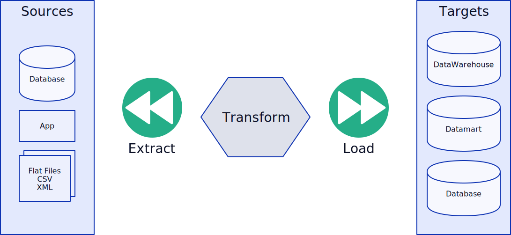
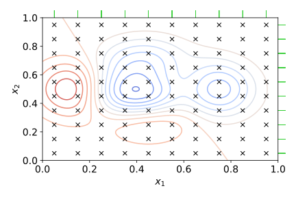
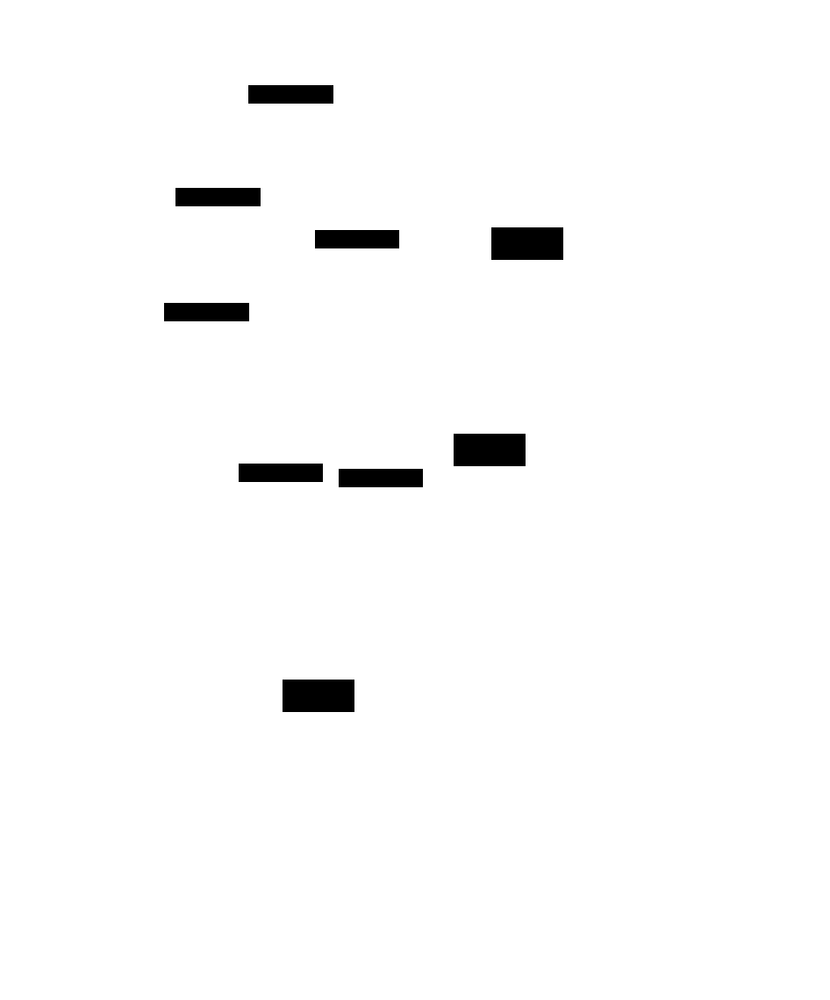
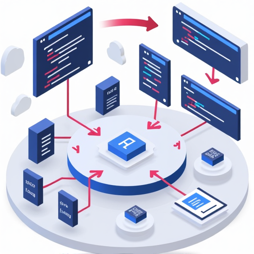
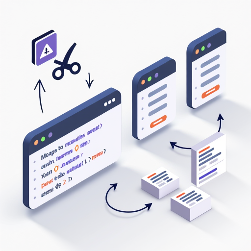
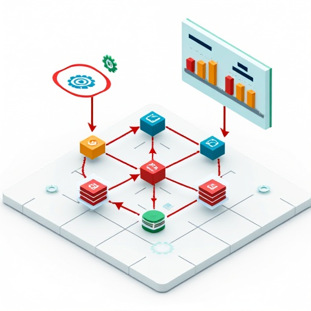
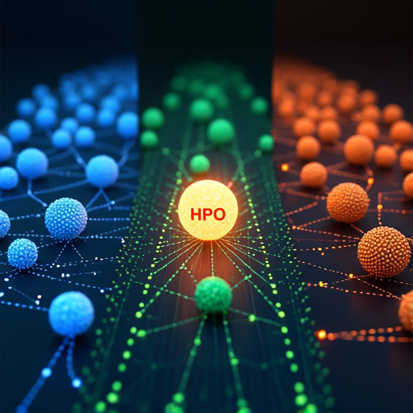
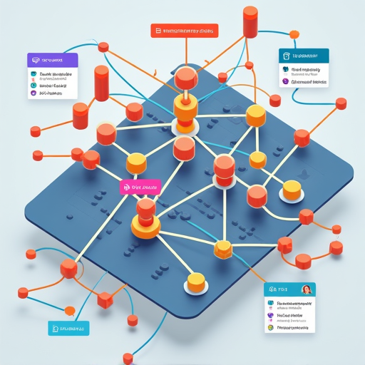
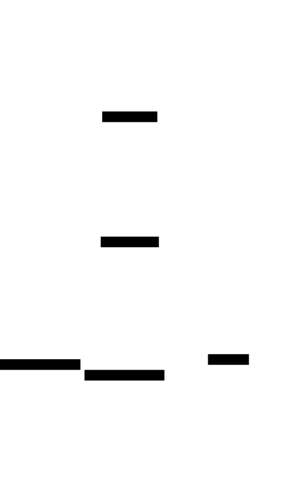
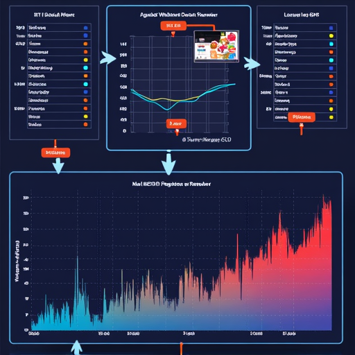

Appendix A — List of projects
A.1 General Indications
This is a list of project ideas, some are of different difficulty levels, and some are cross-over projects that combine multiple subjects of the course.
Those projects should be done alone or in pairs. The deliverables are also indicative, you can propose something else if you think it is more appropriate.
As one say “It’s not about the destination, it’s about the journey”, so the goal is to learn, and to showcase what you have learned.
You need to demonstrate intellectual curiosity, to dig into the subject, search for related work, and to understand what is already done in the field of the project you choose. Sometimes there is already prior work, so you may need to build on top of it if it is relevant.
Don’t hesitate to propose your own project idea if you have something else in mind that is not listed here!
A.2 Terminology
A.2.1 ETL

A.2.2 HPO

A.2.3 Deep Research
Deep Research is composed of an LLM (which can be selected from the current list of LLMs provided by OpenAI, 4o, o1, o3, etc) and an internal “agentic framework” which guide the LLM to use tools like web search and organize its actions in steps.
Here, we may broaden the “Deep Research” domain of application to any type of search like codebase extraction (instead of web search).
See Building Deep Research from scratch
A.2.4 Work-Stealing
Work-stealing is a scheduling strategy for parallel computing where idle processors dynamically “steal” tasks from busy processors to balance the workload and improve efficiency.

A.2.5 OLAP (Online Analytical Processing)
Online Analytical Processing is a category of software technology that enables analysts, managers, and executives to gain insight into data through fast, consistent, interactive access in a variety of ways.
B Projects
B.1 Code Assistants
(1) Deep research assistant for creating a README for a codebase (pipeline version)
- Description
- Build an assistant that analyzes a codebase, infers project structure, and generates a high‑quality README with a summary, usage and architecture details.
- Deliverables
- CLI/Notebook that ingests a repo and outputs a README.md file.

(2) Deep research assistant for creating a README for a codebase (agentic/mcp version in continue.dev)
- Description
- Build an agentic/mcp assistant that analyzes a codebase, infers project structure, and generates a high‑quality README with a summary, usage and architecture details.
- Deliverables
- a set of LLM setup with mcp servers and promopts in vscode continue extension that can generate a README.md file for a codebase.
(3) Generating docstrings for Python code in a codebase
- Description
- Auto-generate docstrings for functions and classes, then implement automated checks and tests that validate docstring correctness against function behavior.
- Deliverables
- tools that annotates Python code with docstrings, and a test suite that checks docstring claims (examples/expected behavior)

(4) Code summarization/explanation and modularization suggestions for long Python scripts
- Description
- Create a tool that parses very long Python scripts and outputs modularization suggestions (module boundaries, function extraction) and a summary with refactor hints.
- Deliverables
- Tool that takes a long Python script and outputs a summary and modularization suggestions (mcp server)

- https://github.com/yt-dlp/yt-dlp/blob/master/yt_dlp/YoutubeDL.py
- https://github.com/aws/aws-cli/blob/develop/awscli/clidriver.py
- https://github.com/sqlalchemy/sqlalchemy/blob/main/lib/sqlalchemy/orm/session.py
- https://github.com/pallets/jinja/blob/main/src/jinja2/environment.py
- https://github.com/ipython/ipython/blob/main/IPython/core/interactiveshell.py
(5) Pipeline for generating D2lang diagrams with a vision LLM
- Description
- Pipeline that takes a prompt, translates/templates it for a RAG query over the D2lang documentation, and generates a D2 diagram, compiles it to SVG/PNG, analyzes it for correctness and completeness, and iterates to improve it.
- Deliverables
- Gennerate tool that takes a prompt and outputs a D2lang diagram over multiple iterations.
mistral is a vision LLM.
B.1.1 Cross-over : Code Assistants + Numba or Dask
(6) Refactoring bottleneck functions in a codebase to use Numba both with benchmarks, profiling, and tests.
- Description
- Identify hotspots, refactor to Numba, and quantify speedup/accuracy tradeoffs with tests and profiles.
- Deliverables
- Original vs optimized implementations, benchmark script, profiling report, tests verifying numerical parity. Clear reporting of reproducible use of LLMS/Deep Research for codebase understanding and refactoring and reproducibility.

- scikit-learn/scikit-learn — sklearn/manifold/_locally_linear.py — _locally_linear_embedding()
- pandas-dev/pandas — pandas/core/window/common.py — flex_binary_moment()
- ultralytics/yolov5 — train.py — train()
- PaddlePaddle/PaddleOCR
- ultralytics/yolov5 — utils/plots.py, utils/segment/plots.py
- mdobook/resources - exercises/tenbartruss/truss.py
pandas/core/_numba/kernels/* — sliding_mean/var/sum/min_max
(7) Translating PySpark pipelines to Dask — practical migration guide + AI Code Assistant.
- Description
- Port small-to-medium PySpark ETL pipelines to Dask, preserve semantics, benchmark PySpark vs Dask, and provide an AI assistant that suggests rewrites, generates patches/tests, and explains tuning/semantic differences.
- Deliverables
- PySpark examples, Dask reimplementations, benchmark notebook, migration checklist, assistant (mapping rules + prompt templates + patch/test generator), and evaluation report.
B.2 Parallel Computing
(8) Locking Strategy Lab: coarse vs fine vs optimistic vs RW locks
- Description
- Implement and compare multiple locking strategies on a shared structure (e.g., graph or ledger).
- Deliverables
- Implementations, microbench harness, plots comparing throughput vs contention, write-up with recommendations.

Coarse grain: unique global Lock protecting whole structure Fine grain: sharded locks or per-node locks Reader‑Writer lock: shared readers, exclusive writers Optimistic read (versioning / retry): read w/o lock, validate version/cas (Optionnel) Lock‑free / CAS implementations in lower level language
(9) Multi‑stage Image Pipeline with Backpressure & Flow Control
- Description
- Implement a 3+ stage image processing pipeline with bounded queues, backpressure propagation, and dynamic scaling heuristics.
- Deliverables
- Pipeline code, scaling heuristics, benchmark, short UI or logging dashboard.
- Generic supervised CV pipeline (classification/recognition)
- OCR pipeline (detection + recognition)
(10) Adaptive Concurrent Downloader with Politeness & Rate‑Limits (e.g., Google Scholar scraping or LLM API application)
- Description
- Implement polite, adaptive downloader that enforces per-domain politeness, adapts concurrency to observed latency and failures, supports cancellation/priorities. Application to recursive scraping in google scholar or LLM API calls with rate limits.
- Deliverables
- CLI downloader, simulator of remote servers, policies and tests with real-world scraping or API calls example.
https://github.com/dmi3kno/polite
(11) Filesystem Work‑Stealing Crawler (toy distributed scheduler)
- Description
- Parallel filesystem walker and worker pool using work-stealing deques to deal with skewed directories.
- Deliverables
- Crawler implementation, skewed tree generator, benchmark and analysis.
B.2.1 Dask/Ray based
(12) Ray Tune: distributed HPO with comparison of strategies
- Description
- Implement reproducible HPO experiments comparing grid/random/ASHA on a model and present best practices for local vs distributed runs.
- Deliverables
- Experiment suite, plots, reproducible configs with

(13) ETL dask/ray pipeline + Front‑end (Streamlit/Panel/React)
- Description
- Build an ETL that scales locally with Dask or Ray and expose controls/visualization through a simple front-end.
- Deliverables
- ETL code + front-end, README, sample dataset and demo video.

(14) Synthetic Dask DAGs generator for evaluating dask task fusion and scheduling strategies.
- Description
- Create a synthetic DAG generator that can vary task sizes, dependencies, and fusion parameters to evaluate scheduler behavior.
- Deliverables
- Generator, benchmark harness, plots and scheduler tuning recommendations.

(15) Streaming source + sliding window aggregation + dashboard (air quality / financial / river monitoring)
- Description
- Build a streaming pipeline using a local source (or Kafka emulator) performing sliding-window aggregations with a Streamlit/Dash dashboard. Apply to air quality, financial data, river monitoring, etc.
- Deliverables
- Streaming app, dashboard, reproducible synthetic generator, evaluation of latency/accuracy.

B.3 WebGPU
(16) Proof of concept for using WebGPU for Olap queries in the browser
- Description
- Demonstrate how WebGPU can accelerate in‑browser OLAP operations (filters/group-bys/aggregates) on columnar data.
- Deliverables
- In-browser demo, short perf report.
(17) WebGPU app for counting people in a video stream (browser)
- Description
- Implement a browser-based (WebGPU-accelerated) pipeline that performs simple frame-level processing to count people (using a small model or heuristic).
- Deliverables
- Web demo

(18) WebGPU path-tracing
- Description
- https://github.com/ferminLR/webgpu-path-tracing \Rightarrow Implement one or more of the TODO items in the referenced path-tracing repo: advanced shader/task mapping and performance tuning etc.
- Deliverables
- PR to the repo with one or more completed TODO items.
B.3.1 Crossover : Webgpu + LLMs
(19) WebGPU/WebLLM RAG app for document/website Q&A in browser
- Description
- Implement Retrieval-Augmented-Generation entirely in the browser: use WebGPU for vector similarity (ANN) and a small local WebLLM. Application to document or website Q&A.
- Deliverables
- Web demo with interface to upload a document or URL and ask questions.
B.3.2 Crossover : WebGPU + Dask
(20) ETL + WebGPU visualization dashboard with Dask and Streamlit
- Description
- Run ETL at scale locally with Dask and visualize large aggregated results in-browser using WebGPU for rendering (or via Streamlit embedding).
- Deliverables
- Dask ETL pipeline, frontend WebGPU visualizer, fallback renderer, performance report.
